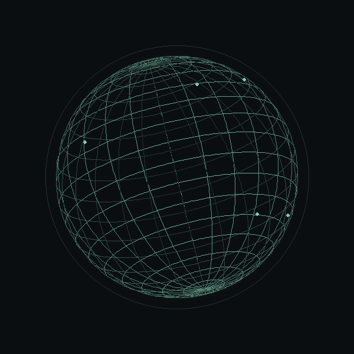
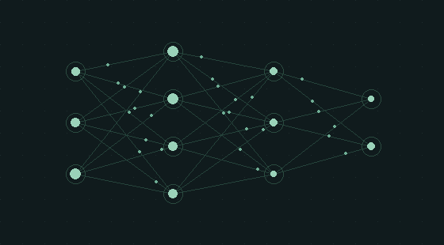

Systems that scale.
Service boundaries, API contracts, event-driven integration, fault tolerance, and performance optimization.
JAVA 21 / SPRING BOOT / KAFKASENIOR TECH LEAD · FULL-STACK ARCHITECT
I’m Sri Krishna. I architect distributed platforms, build intelligent AI applications, and lead teams from technical vision to secure, resilient production systems.
DISTRIBUTED SYSTEMS / CONNECTED INTELLIGENCE

01 / FROM ARCHITECTURE TO PRODUCTION
A hands-on architect who connects system design, delivery discipline, and engineering leadership.
Explore my technical skillsI design, develop, and modernize enterprise-scale applications across the full stack, with a focus on scalability, high availability, security, and operational resilience.
My architecture work connects microservices, REST, GraphQL, and gRPC with event-driven systems built on Kafka, Spark, and Flink. Across AWS, Azure, and GCP, I combine container orchestration, serverless services, and infrastructure as code.
I bring generative and agentic AI into enterprise workflows through LLM integration, RAG, semantic retrieval, and Python/FastAPI services. I also guide cross-functional teams through architecture reviews, mentoring, secure delivery, and complex production issues.
Service boundaries, API contracts, event-driven integration, fault tolerance, and performance optimization.
JAVA 21 / SPRING BOOT / KAFKARAG, agent workflows, embeddings, vector search, and LLM integration connected to business applications.
FASTAPI / LANGCHAIN / LANGGRAPHMulti-cloud infrastructure, automated quality gates, security scanning, observability, and controlled releases.
KUBERNETES / TERRAFORM / DEVSECOPSArchitecture and code reviews, developer mentorship, technical decisions, and cross-functional delivery.
TECHNICAL STRATEGY / TEAM LEADERSHIP02 / THE JOURNEY
Growing from enterprise development
to architecture and technical leadership.
2014 — 2026
Architecture and technical leadership for TriNet’s cloud-native HRMS, covering employee lifecycle, payroll, benefits, onboarding, and workforce analytics.
Contributed to Verizon’s enterprise digital ecosystem: customer accounts, telecom services, device purchases, and high-volume digital transactions.
Led engineering across OCH healthcare services and UAE PASS, a national digital identity platform.
Onsite coordination and Java technical leadership for International Medical Center’s IMC Mayo and Patient Portal.
Built capabilities for ezFlow (Aiotal), a real-time platform for ingesting, connecting, transforming, and streaming enterprise data.
Delivered enterprise applications for UTi eMpower, Cisco Polaris Web, and IBM Disaster Recovery Management.
Contributed to EZYInsure and EzyMap for Emirates Insurance Company, ADNIC, and Union Insurance.
03 / SELECTED CONTRIBUTIONS
A closer look at the platforms
and experiences I helped build.

INTELLIGENCE, WITH CONTEXT.Cloud-native HR services with event-driven payroll and employee workflows, plus RAG-powered policy retrieval and agentic AI assistance.
Designed service boundaries and API contracts; developed Python/FastAPI AI services with LangChain and LangGraph; led Kubernetes infrastructure, secure delivery pipelines, and observability.
Secure authentication, identity verification, and digital access for a national identity platform connecting government and private services.
Designed secure service boundaries, API integrations, and authentication workflows. Contributed to cloud-native delivery, reliability, and technical leadership across identity-management services.
Web and mobile patient services connecting appointments, medical records, vital signs, notifications, and secure healthcare integrations.
Served as Onsite Coordinator and Java Tech Lead. Built reusable service layers, third-party integrations, batch workflows, and patient-service capabilities for IMC Mayo and the Patient Portal.
A real-time enterprise data platform connecting ingestion, transformation, streaming, and business-user workflows across diverse sources.
Developed Java/Spring Boot services, reusable persistence layers, event-driven Kafka processing, and scheduled batch jobs for high-volume data ingestion and transformation.
04 / TECHNICAL SKILLS
Explore the languages, platforms, and practices
behind my enterprise engineering work.
SELECT AN AREA TO SEE THE DETAILS
Java 21 · Spring Boot · Go · REST · GraphQL · gRPC
Java, Python, Go, JavaScript, TypeScript, SQL, Spring Boot, Spring MVC, Spring Security, FastAPI, Node.js, Hibernate, and JPA.
Solution architecture, microservices, distributed systems, event-driven architecture, API and database design, high availability, resilience, fault tolerance, performance tuning, and design patterns.
LLMs · RAG · LangChain · LangGraph · FastAPI
LLM integration, AI agents, retrieval-augmented generation (RAG), prompt engineering, workflow orchestration, embeddings, vector databases, and semantic search.
FastAPI, Pydantic, Pandas, NumPy, Scikit-learn, Jupyter Notebook, data processing and transformation, model integration, and RESTful AI/ML APIs.
AWS · Azure · GCP · Kubernetes · Terraform
AWS, Microsoft Azure, GCP, cloud compute, storage, networking, IAM, and serverless architecture. AWS Lambda, API Gateway, EC2, S3, VPC, Auto Scaling, and CloudWatch.
Docker, Kubernetes, Helm, Rancher, Deployments, Services, ConfigMaps, Secrets, horizontal pod autoscaling, health probes, Terraform, CloudFormation, Ansible, and ARM templates.
React · Angular · Next.js · TypeScript · JavaScript
React.js, Angular, Next.js, JavaScript, TypeScript, HTML5, CSS3, responsive web development, and integration with backend APIs and enterprise services.
Kafka · Spark · Flink · PostgreSQL · MongoDB · Redis
Apache Kafka, RabbitMQ, Spark, Flink, Camel, asynchronous messaging, stream processing, producers and consumers, consumer groups, partitioning, and schema evolution.
Oracle, PostgreSQL, MySQL, SQL Server, MongoDB, DocumentDB, DynamoDB, Redis, and H2. Relational and NoSQL data stores, database design, query optimization, and transaction management.
Zuora · Chargebee · Stripe · Usage-based billing
Zuora, Chargebee, Stripe, subscription management, recurring and usage-based billing, pricing and product catalogs, customer accounts, and invoicing.
Payment processing, gateway integration, refunds, credits, webhooks, billing APIs, and payment reconciliation.
Jenkins · GitLab · SonarQube · JaCoCo · CodeQL
Jenkins, Harness, GitLab CI/CD, Bitbucket, JFrog Artifactory, Nexus, Maven, Gradle, Ant, automated pipelines, and release management.
SonarQube, SonarCloud, Fortify SCA, Checkmarx, Veracode, Snyk, OWASP Dependency-Check, SpotBugs, PMD, Checkstyle, ESLint, CodeQL, Trivy, and JaCoCo.
OAuth 2.0 · JWT · IAM · Prometheus · Grafana
OAuth 2.0, JWT, SAML, SSO, SSL/TLS, IAM, RBAC, OWASP, API security, Secure SDLC, secrets management, HashiCorp Vault, vulnerability remediation, and container scanning.
Prometheus, Grafana, Splunk, Elasticsearch, Logstash, Kibana, OpenSearch, and CloudWatch. Distributed logging, metrics, alerting, production monitoring, performance optimization, and root cause analysis.
JUnit 5 · Testcontainers · PyTest · Jest · Playwright
JUnit 5, Mockito, Spring Boot Test, Testcontainers, REST Assured, Postman, and PyTest. Unit, integration, API, contract, regression, and performance testing.
Jest, React Testing Library, Jasmine, Karma, Cypress, Playwright, and Selenium. End-to-end testing, test automation, test-driven development, and behavior-driven development.
Architecture reviews · Mentorship · Agile · Copilot
Technical strategy and design, architecture and code reviews, pull request reviews, developer guidance, cross-functional collaboration, stakeholder communication, and technical documentation.
Agile, Scrum, TDD, BDD, Waterfall, SDLC, Secure SDLC, continuous integration and delivery. GitHub Copilot, Cursor, Claude, and Kiro for coding, refactoring, test generation, debugging, reviews, and documentation.
No matching skill areas. Try a language, platform, or engineering practice.
Technology is only part of the equation.
I lead teams, mentor engineers, and turn architectural decisions into shared direction.
05 / START A CONVERSATION
Building a distributed platform, modernizing enterprise applications,
or bringing AI into production? Let’s talk architecture and delivery.